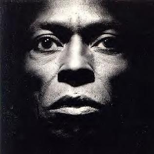

Discography


William Henry Marcus Miller Jr. was born on June 14th 1959 in Brooklyn, NY. His father was a church organist and choir director and Marcus is the cousin of pianist Wynton Kelly. He studied classical clarinet at age 10 and then moved on to bass guitar at age 13. By age 15, he was gigging around New York City and scoring session work. In 1981, he joined Miles Davis in his newest iteration of his artistic ventures. Leaving in 1983 and joining him again in 1986, he was instrumental (pun intended) in Miles' 80s sound. Around this time, he also produced and worked on several Luther Vandross works, notably "Never Too Much", appeared on multiple David Sanborn albums with his most notable track being "Run For Cover" starring Marcus' trademark triplet slap and pop. He would then appear on Aretha Franklin's "Get it Right", Donald Fagen's "The Nightfly", and his most famous credited work at the time was writing and playing on Grover Washington's "Winelight" which contains the timeless classic "Just the Two of Us". He also recorded his own solo album with "Sunddenly" in 1983, "Marcus Miller" in 1984, featuring artists like Bernard Wright, Miles Davis, Omar Hakim, Wayne Shorter, and so many more. His solo albums are famous for displaying his popular slapping techniques, which were a marked improvement in style and precision from artists such as Larry Graham and Louis Johnson. Fun Fact: His accolades later landed him on radars of Japanese artists during their slew of 1980s jazz-inspired music, ending up on multiple features with artists like Toshiki Kadomatsu. Today, he tours the world replaying his most famous tracks from his discography and kicking back after a career that most session musicians would not dare mimic. He played with the greats, pushed the barrier with his own style, and had a family. Meanwhile I'm out here unable to get out of bed at 10a.m.